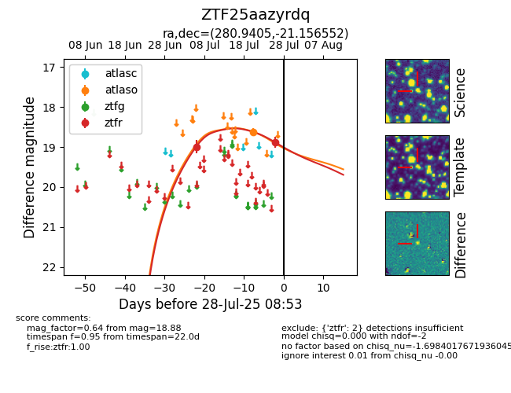

Target ZTF25aazyrdq at 2025-07-28 08:53, see:
FINK: fink-portal.org/ZTF25aazyrdq
Lasair: lasair-ztf.lsst.ac.uk/objects/ZTF25aazyrdq
ALeRCE: alerce.online/object/ZTF25aazyrdq
alt names
ZTF25aazyrdq (ztf,fink)
coordinates:
equatorial (ra, dec) = (280.9405,-21.15655)
galactic (l, b) = (13.1382,-7.86153)
photometry
last atlaso=18.62, ztfr=18.88
1 atlaso, 2 ztfr detections
